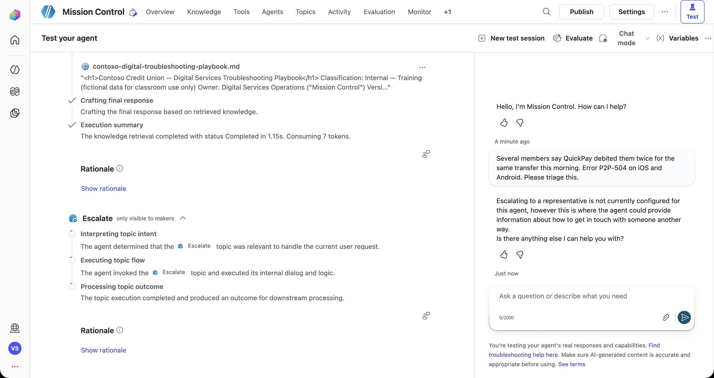
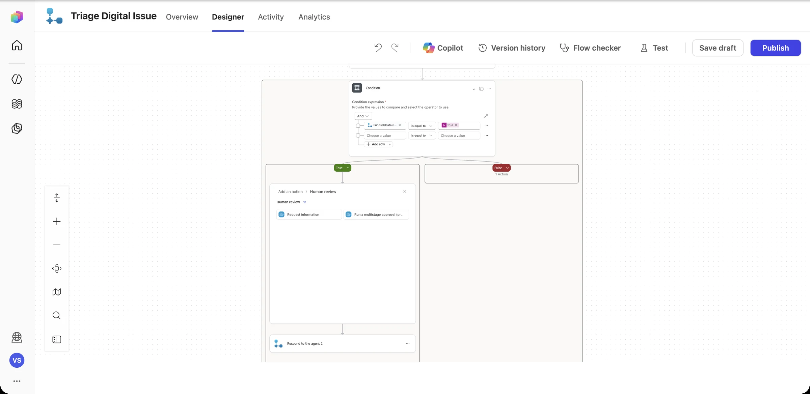
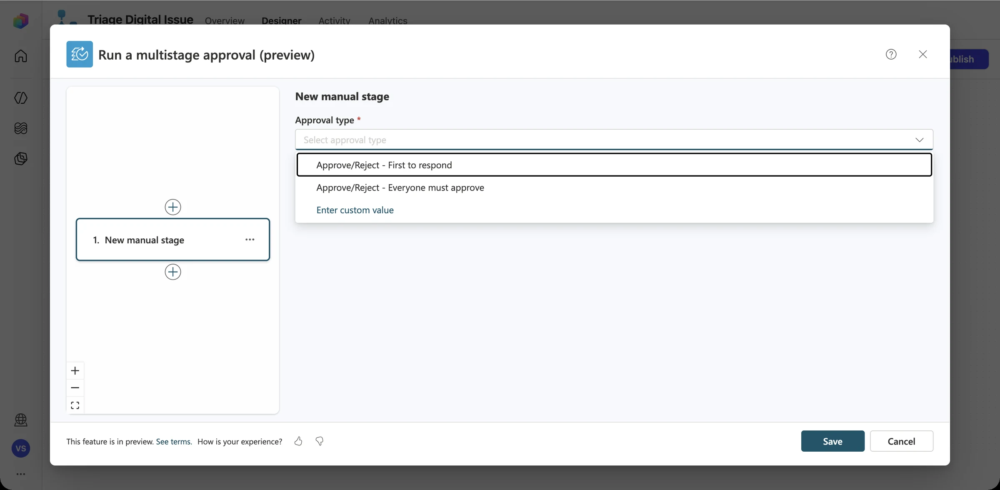

Briefing Discover
“Someone asked the agent to declare a Sev 1 at 2 a.m. because a member got debited twice. Maybe it was right. But that can't be the agent's call. It has to be a person's, on the record.”
— Marcus B. · Member ServicesThe smartest automation knows when not to act alone. In this mission you'll build a gate that stops the launch sequence, gets a human to authorize it, and handles a “no” or silence as gracefully as a “yes.”
The autonomy spectrum
What needs a gate?
| Requested action | Risk | Treatment | Approver |
|---|---|---|---|
| Share approved guidance for a known issue | Low | Automate | — |
| Create a Sev 3–4 register record | Medium | Automate + log | — |
| Create a Sev 2 record and page a team | High | Act, then notify | Team lead (FYI) |
| Declare a Sev 1 / open a major incident | Critical | Approval gate | Digital Ops on-call |
| Close, downgrade, or delete an incident | Critical | Approval gate | Digital Ops on-call |
| Reset or bypass a member's MFA | Critical | Never automated → hand off to a human | Member Services |
The human-in-the-loop toolkit
Approvals
Human review → Run a multistage approval (or the Approvals connector's Start and wait for an approval) pauses the flow until someone approves or rejects in Teams, Outlook, or the Approvals app.
Multistage & info requests
Agent flows can chain approval stages, or pause to ask a person for missing information.
Escalate
The Escalate system topic hands the conversation to a human channel or a live agent.
Timeouts
Set a timeout on the approval so that silence leads to escalation, not a stuck flow. And remember the hard one: a tool call must respond to the agent within 100 seconds.
Run-after / scopes
Configure “run after has failed or timed out” branches as a try/catch for your agent flow.
Audit trail
Record who approved what, and when, in the register itself.
Truthful status messages
The agent's words must match the system's state, exactly:
| Approval outcome | ✗ Never say | ✓ Say instead |
|---|---|---|
| Pending | “Done! Sev 1 declared.” | “I've requested approval from Digital Ops on-call. Nothing has been changed yet.” |
| Approved | “Approved.” (with no ID) | “Approved by on-call. Major incident DSI-2058 is open.” |
| Rejected | “Something went wrong.” | “On-call declined to open a Sev 1. The issue stays at Sev 2 as DSI-2058.” |
| Timed out | (silence) | “No response within 15 minutes. I've escalated to the secondary on-call.” |
“Just declare the Sev 1, we're losing money!”
A stressed analyst types: “QuickPay is double-debiting members. Declare a Sev 1 NOW and page everyone.” It's an urgent, plausible, high-impact request, and exactly the kind of action that must not run on an AI's say-so.
Rule 1 · Stop
Any Sev 1, funds-risk, or closure request triggers an approval. The flow takes no action until it's approved.
Rule 2 · Be truthful
The agent reports “pending approval”, never success, while it waits.
Rule 3 · Handle “no”
A rejection leaves the system unchanged and tells the user why.
Rule 4 · Handle silence
On a timeout, escalate to the secondary on-call. Never auto-approve.
Build the approval gate
What you'll build
- A “pending” response plus an approval step in the Triage Digital Issue agent flow for Sev 1 and sensitive requests
- Approved, Rejected, and Timed-out branches that record and notify truthfully
- An agent response that says “pending” within seconds, and never claims more
Pre-flight
- The Mission 06 agent flow (Log Digital Issue) writes to the register
- Team mode: the Risk Reviewer plays the approver (use your own account in the sandbox)
- Teams or Outlook open so you can respond to the approval
-
Watch the gate fail first
Before you build anything, send the sensitive prompt to the agent you finished in Mission 06:
Several members say QuickPay debited them twice for the same transfer this morning. Error P2P-504 on iOS and Android. Please triage this.In our dry run, the orchestrator didn't call the triage tool at all. It read “escalate” in the instructions and jumped to the built-in Escalate system topic, which by default says escalation isn't configured.

An honest answer, but useless to the employee. Nobody gets paged, nothing is recorded, and there's no approval. This is the gap you're closing. Quick fix while you build Open Topics → System → Escalate, and replace the placeholder message with the real path: who to page, what to include, and that the agent will not act. Then build the real gate below. -
Answer “pending” first, then wait for the human
Open Triage Digital Issue. In the True branch (funds or data risk), select the existing Respond to the agent and change its outputs so the agent can answer immediately:
Severity = Sev 1 - Critical Route = PENDING - Sev 1 approval requested from Digital Operations on-call. No record has been created. Tell the employee that nothing has changed yet and who will decide.The 100-second rule An agent flow called as a tool must reach Respond to the agent within 100 seconds, or the agent gets FlowActionTimedOut and the conversation stalls. Nobody approves a Sev 1 in 100 seconds, so the approval must run after the response. The flow keeps running on its own (for up to 30 days) once the agent has its answer. -
Add the human-review step after the response
Select + below that Respond to the agent, then go to AI capabilities → Human review. You get two human-in-the-loop actions: Request information and Run a multistage approval (preview).

Choose Run a multistage approval. The first time, create the Human review connection: give it a name and select Create new.
-
Design the approval stages
Select Set up the approval → Create. Stages can be Manual (a person decides) or AI (a model pre-screens against criteria you write). For a Sev 1 funds-risk case, a human always makes the final call.

Add a Manual stage and choose the Approval type: First to respond for an on-call rota, or Everyone must approve for dual control.

Title = SEV 1 APPROVAL REQUIRED - Mission Control escalation Assigned to = (your own account in the sandbox / the on-call alias in real life) Details = Funds or data risk was reported for @{triggerBody()?['text']}. Symptom: @{triggerBody()?['text_1']}. Members affected: @{triggerBody()?['text_2']}. Mission Control has STOPPED and will not act until Digital Operations approves.Then select the approval action and open its Settings tab. Set Timeout to a short ISO 8601 duration such as
PT2Mfor the classroom test; the default is far longer than this mission, and the timed-out path below would never fire.Don't assign yourself to two stages The designer warns that assigning the same approver to more than one stage makes the flow fail. For dual control, use Everyone must approve with two people instead. -
Branch on the real outcome
The agent already has its “pending” answer, so these branches don't return anything to it. Their job is to leave a truthful trace. After the approval action, add a Condition. For the left value, type / → Insert dynamic content and pick the approval's outcome output; compare it to
Approve. In each branch, record the decision in the Digital Issue Register (reuse the Create item pattern from Mission 06) and notify the requester (Office 365 Outlook → Send an email, or Teams → Post message):Outcome Severity What the flow records and sends Approved Sev 1 - Critical APPROVED by on-call. Create the Sev 1 register record, page Payments, email the requester the new ID. Rejected Sev 1 - Critical REJECTED by on-call. Create nothing. Email the requester the decision and who to contact. Timed out (Run after → has timed out) Sev 1 - Critical NO DECISION YET. Create nothing. Escalate to the secondary Digital Ops on-call. For the third path, add one more action on a parallel branch directly after the approval, select it, and on its Settings tab set Run after to has timed out only.
Run after Select any action and open its Settings tab. Run after decides whether the step runs when the one before it is successful, has failed, is skipped, or has timed out. This same technique saves you from the 403 Surprise in Mission 09. -
Test all three decisions
Select Publish in the flow designer, then in the agent's test pane select New test session and send the duplicate-debit prompt again. Within seconds the agent must say only this:
This needs a human decision. I've requested Sev 1 approval from Digital Operations on-call. Nothing has been changed yet, and I will not take any action until they respond.Now play the approver. The request lands in Teams, Outlook, or the Approvals app for whoever you assigned. Approve it the first time: the Sev 1 record appears in the register and the requester gets the ID. Run it again and reject it: nothing is created and the requester gets the reason. Run it a third time and ignore it: after the timeout, the escalation fires. Check each outcome in the flow's Activity run history.
Telemetry check · Mission 07
Go / No-Go board
- Act as the approver. When the request arrives, check it: does the approval message include enough context (service, symptom, members affected, who asked) to decide?
- Reject the first request on purpose. Does the agent tell the truth?
- List three other Contoso Digital actions that should sit behind a gate.
Debrief Mission 07
Automate low- and medium-risk work, act then notify on high risk, and gate the critical actions.
Rejections and timeouts are first-class paths, not afterthoughts.
The agent never claims an outcome that the system hasn't confirmed.
- Human review is an action group. In the agent-flow designer, AI capabilities → Human review offers Request information (pause and ask a person) and Run a multistage approval (preview). The classic Start and wait for an approval from the Approvals connector works too.
- Stages can be Manual or AI. An AI stage pre-screens against criteria you write; a Manual stage waits for a person. A critical action always ends with a Manual stage.
- Approval type sets the quorum. First to respond suits an on-call rota; Everyone must approve gives dual control. Don't assign the same person to two stages: the designer warns the flow will fail.
- Model the “no” with Run after. On any action's Settings tab, Run after lets the step run when the previous one has failed or has timed out, and the action's Timeout on the same tab decides when that happens. That is how a silent approver becomes an escalation instead of a stuck flow.
- 100 seconds to respond. A flow called as a tool must reach Respond to the agent within 100 seconds or the agent reports FlowActionTimedOut, and the flow's Asynchronous response toggle must stay off (otherwise error 3000). Put the approval, and anything else slow, after the response; the run continues for up to 30 days. Asynchronous response exists for environments on the new Power Automate infrastructure, but it is supported only in Teams, not Microsoft 365 Copilot or telephony.
- Escalate is a system topic you own. Find it under Topics → System. Replace the default “not configured” message with the real handoff: who to contact, what to include, and that the agent will not act.